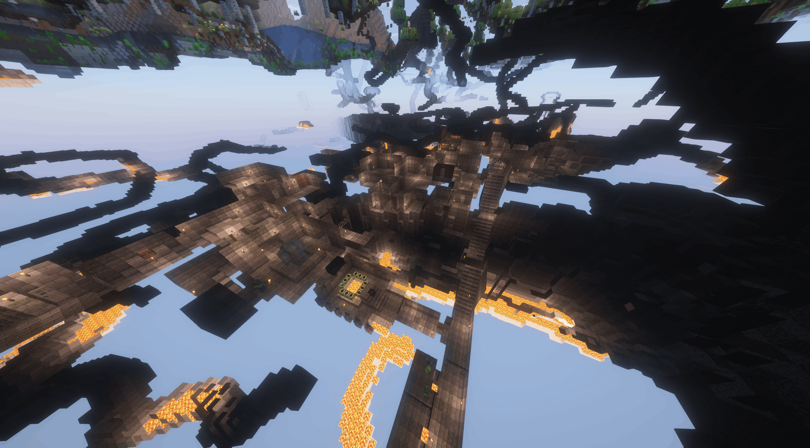
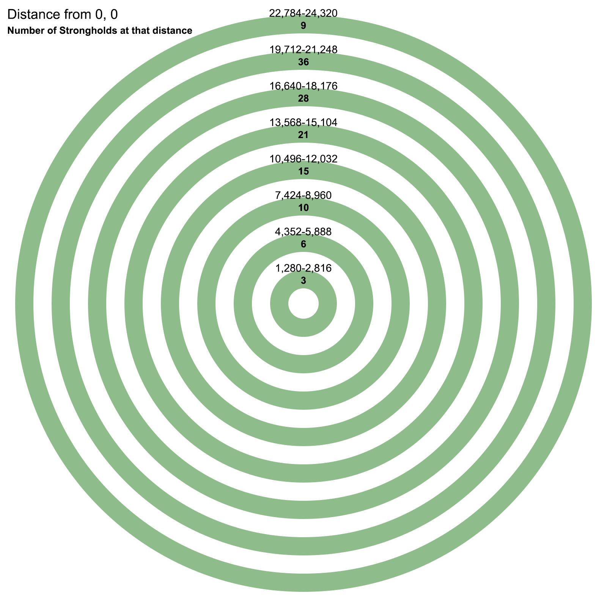
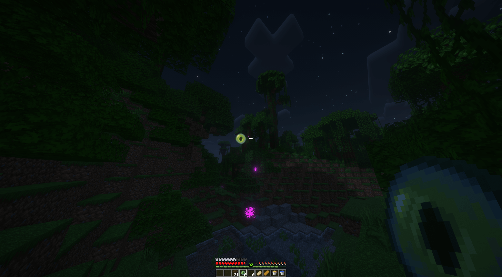
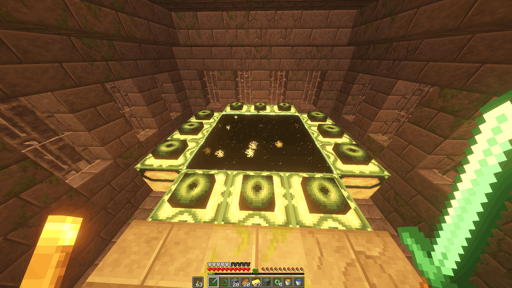
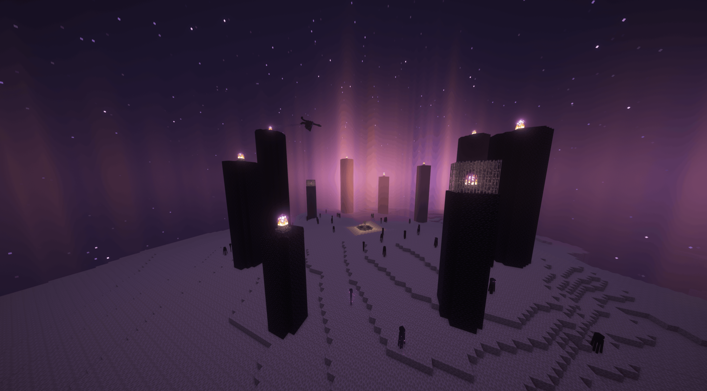
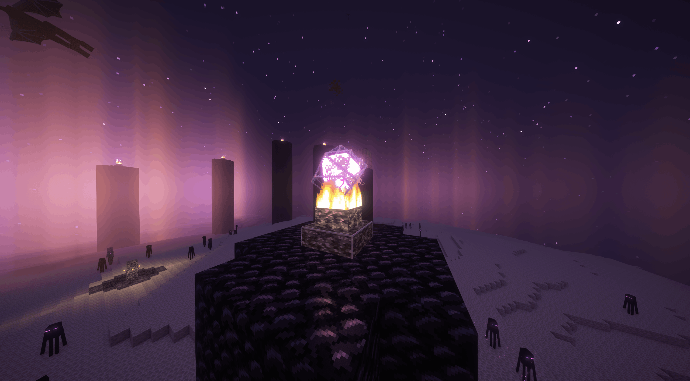
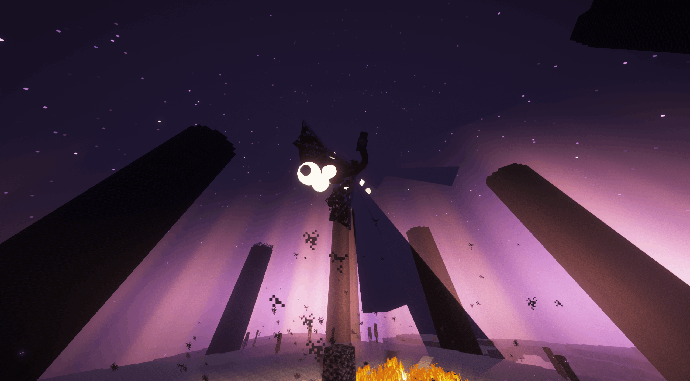

Introduction
Strongholds are structures that generate naturally in the overworld.

They spawn in rings.

If you followed the ender eye perfectly you will dig down to the
starting staircase of the stronghold.

This is a staircase which extends into a room which has 5 possible
rooms extending from it.
Mainly you want to just go through rooms looking for the end portal
room.
Up to 4 stronghold chests can spawn and they can contain ender
pearls, apples and bread mainly.
The main principle for finding the end portal room is that it must
spawn at least 5 rooms from the starting staircase, but tends to
spawn within 7 or 8 rooms from it so you shouldn't go too deep into
the stronghold looking for it and should return to the starter
staircase and choose a different route.
There can be quite a lot of variance and randomness with finding the
portal.
Once you find the end portal, there will be 12 end portal frames.
Each of these frames has a 10% chance to contain an eye pre-filled.

This means you will need at most 12 eyes of ender to fill the end
portal and because of the way the probabilities work, it is quite
unreliable to rely on 2 or more eyes.
Ender Dragon Fight
You will need to have gathered some resources at some point
throughout the run.

Minimal resources are some beds which you can use to "one cycle" the
dragon.
This works since beds explode when you try to sleep with them in the
end.
This means when the dragon flies to the middle, you place a bed on
the bedrock and explode it at the right time, dealing damage to the
dragon and pushing it up so you can use another bed to also deal
damage and push up the dragon again. This can take a lot of practice
and the best runners can consistently kill the dragon in 4-5 beds.
Probably the easiest way to kill the dragon is to have a bow and at
least 32 arrows.
Then you can shoot arrows at the end crystals to take them down
while making sure to not look at the endermen and move away when the
dragon shoots dragon breath at you.

When the dragon perches you can move around to the side or behind
the dragon to enter the fountain underneath the dragon and hit it
with an axe or sword until it flies away.
If you are not in the fountain when it flies away from the fountain
be careful since it will fly towards you, potentially knocking you
up into the air.
As long as you've shot down every crystal the dragon won't heal.
Note that when shooting at the dragon or hitting it with an
axe/sword hitting its head does much more damage than hitting its
body.

After killing the dragon and you enter the end portal, timing ends
and you've completed a speedrun! There are still many, many
advanced, complex and varied strategies left unmentioned here.
Check out other guides, resources, streams, runs and discord servers
for information on these.
Other Information
This guide is specifically tailored for Minecraft version 1.16.1, a
favorite among speedrunners for its distinctive mechanics and
strategic opportunities, particularly in the Nether.
While our focus is on optimizing runs for this version, Minecraft
speedrunning spans a variety of versions and categories, each
offering its own unique challenges and strategies.
If you're interested in exploring these other categories, or want to
learn more about the broader speedrunning community, we recommend
visiting sites like
Speedrun.com.
There, you'll find leaderboards, community discussions, and
additional resources to help you refine your skills.
Whether you’re looking for seed finders, timing tools, or advice
from fellow runners, the community has a wealth of knowledge to
share.
Join us and push the limits of what's possible in Minecraft
speedrunning!